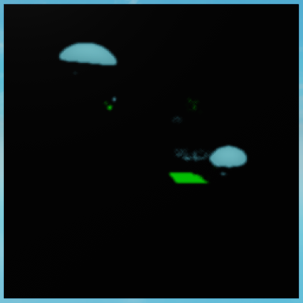
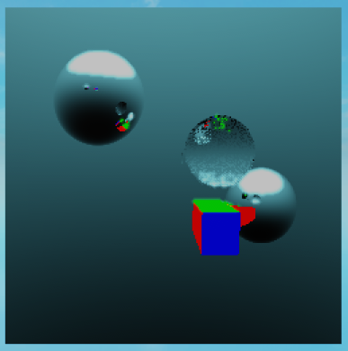

Here are some post-processing techniques that were not covered in the previous tutorials.
Creating new buffers
Creating new buffers can be useful in cases where you want to pass additional information to other post-processing shaders that isn't originally available in the image. For example, you might want to create a luminance buffer from the original image in order to add a bloom effect.
localPostProcessingShader=require(script.Parent.Parent.classes.PostProcessingShader)localLuma=PostProcessingShader.new()Luma.Function=function(RayTracer,...)localthresholdBuffer=RayTracer.Buffers.ColorlocaldepthBuffer=RayTracer.Buffers.DepthlocalnormalBuffer=RayTracer.Buffers.NormallocallumaBuffer={}forx=1,#thresholdBufferdolumaBuffer[x]={}fory=1,#thresholdBuffer[x]do-- This is the luminance formula based on the ITU-R BT.709 standard.localluma=0.2126*thresholdBuffer[x][y].r+0.7152*thresholdBuffer[x][y].g+0.0722*thresholdBuffer[x][y].blumaBuffer[x][y]=lumaendend-- Add the new Luma buffer to the RayTracer.return{Color=thresholdBuffer,Depth=depthBuffer,Normal=normalBuffer,Luma=lumaBuffer,}endreturnLuma
Image of the Luma buffer after the post-processing shader is applied using the same scene as in the Advanced shading tutorial.
Using custom buffers in post-processing shaders
If a post-processing shader returns a buffer dictionary, the RayTracer will use the new buffers in place of the old ones. This is the easiest way to pass additional information to other post-processing shaders.
Expanding on the previous example, bloom effects typically find bright areas in the image by looking at the luminance buffer. Let's create a shader that creates a new buffer that only contains the bright areas in the image.
localPostProcessingShader=require(script.Parent.Parent.classes.PostProcessingShader)localThreshold=PostProcessingShader.new()localminLuma=0.7Threshold.Function=function(RayTracer,...)localthresholdBuffer=RayTracer.Buffers.ColorlocaldepthBuffer=RayTracer.Buffers.DepthlocalnormalBuffer=RayTracer.Buffers.NormallocallumaBuffer=RayTracer.Buffers.LumalocalthresholdBuffer={}forx=1,#thresholdBufferdothresholdBuffer[x]={}fory=1,#thresholdBuffer[x]do-- If the luminance is greater than the threshold, set the pixel to its original color.-- Otherwise, set it to black.iflumaBuffer[x][y]>minLumathenthresholdBuffer[x][y]=thresholdBuffer[x][y]elsethresholdBuffer[x][y]=Color3.new(0,0,0)endendend-- Add the new Threshold buffer to the RayTracer.return{Color=thresholdBuffer,Depth=depthBuffer,Normal=normalBuffer,Luma=lumaBuffer,Threshold=thresholdBuffer,}endreturnThreshold
Image of the Threshold buffer after the Threshold post-processing shader is applied.
Let's create a new post-processing shader that applies a Gaussian blur to the threshold buffer. The Gaussian blur is a convolution filter that blurs the image. We will include the radius of the blur as a variable in the shader.
localPostProcessingShader=require(script.Parent.Parent.classes.PostProcessingShader)localThresholdBlur=PostProcessingShader.new()localradius=2functiongetAverageColor3Cirle(img,x,y,radius)localsum=Vector3.new(0,0,0)localcount=0fori=-radius,radiusdoforj=-radius,radiusdolocalx=x+ilocaly=y+jifx<1orx>#imgory<1ory>#img[x]thencontinueend-- If the current pixel is outside the circle, skip it.ifmath.sqrt(i^2+j^2)>radiusthencontinueendlocalcolor=Vector3.new(img[x][y].R,img[x][y].G,img[x][y].B)sum=sum+colorcount+=1endendreturnColor3.new(sum.X/count,sum.Y/count,sum.Z/count)endThresholdBlur.Function=function(RayTracer,...)localcolorBuffer=RayTracer.Buffers.ColorlocaldepthBuffer=RayTracer.Buffers.DepthlocalnormalBuffer=RayTracer.Buffers.NormallocallumaBuffer=RayTracer.Buffers.LumalocalthresholdBuffer=RayTracer.Buffers.ThresholdlocalblurredBuffer={}forx=1,#colorBufferdoblurredBuffer[x]={}fory=1,#colorBuffer[x]dolocalcolor=getAverageColor3Cirle(thresholdBuffer,x,y,radius)blurredBuffer[x][y]=colorendendreturn{Color=colorBuffer,Depth=depthBuffer,Normal=normalBuffer,Luma=lumaBuffer,Threshold=thresholdBuffer,Blurred=blurredBuffer,}endreturnThresholdBlur

Image of the Blurred buffer after the ThresholdBlur post-processing shader is applied.
Finally, let's create a new post-processing shader that combines the blurred threshold buffer with the color buffer to create a bloom effect.

Image of the Bloom buffer after the Bloom post-processing shader is applied.
There we have it! Admittedly, this particular bloom effect doesn't look very good, but better-looking effects can be achieved by tweaking the shader parameters or by making the shader in a different way.
Note
The bloom effect in this example is achieved using a combination of 4 post-processing shaders, but it is possible to achieve the same effect by combining the bloom effect with the threshold and blur post-processing shaders.
You could also include the luma shader in the bloom shader, but keeping the luma shader separate may be useful for other post-processing effects.
Important
When using custom buffers, make sure that each buffer is available when the post-processing shader is called. Post-processing shaders are called in the order that they are defined in the RayTracer.PostProcessingShaders table. In the previous example, the Threshold shader would be called after the Luma shader, so the RayTracer's PostProcessingShaders table would look like this: